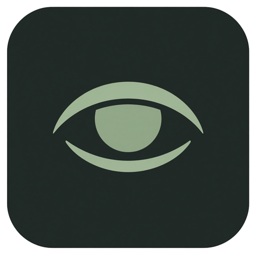

Iris
Живёт в трее и вовремя просит отвести взгляд от экрана.
Интервал работы
Минуты до следующей паузы
Длительность паузы
Секунды перекрытия экрана
Следующая пауза через 20:00
Правило 20-20-20: каждые 20 минут смотрите 20 секунд вдаль.